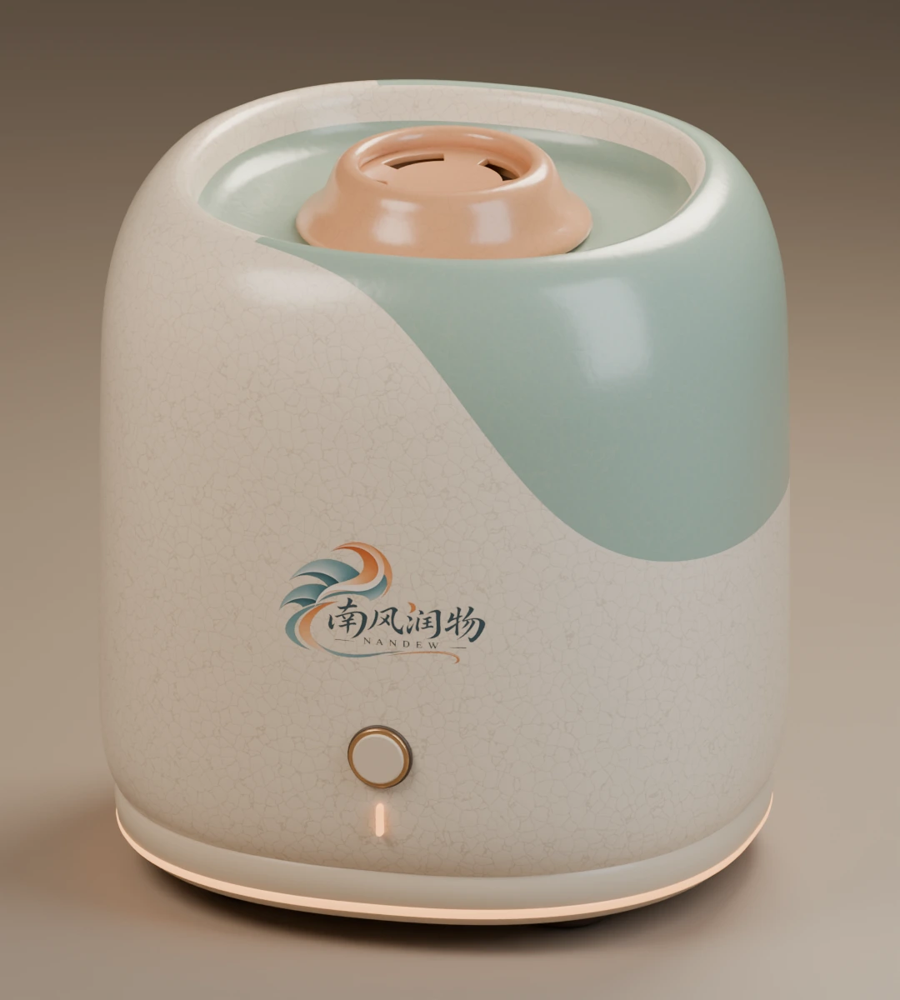
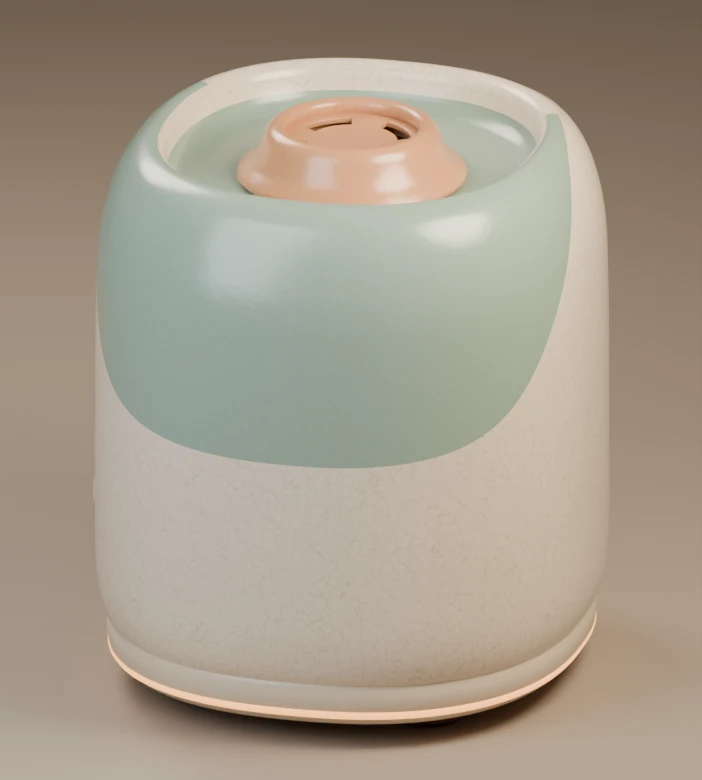
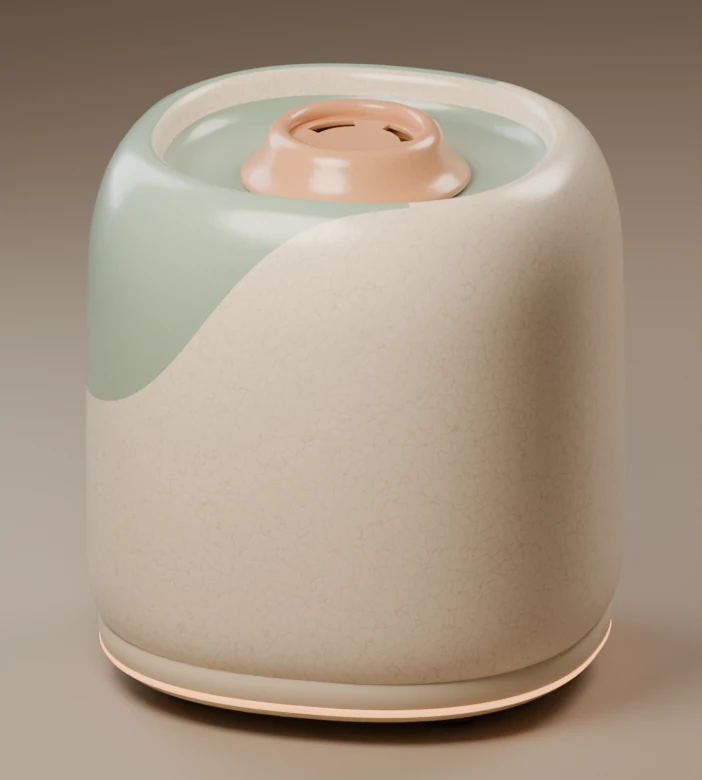
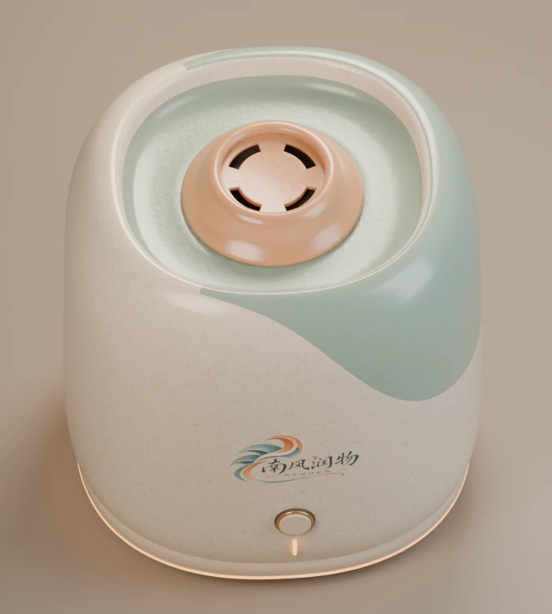
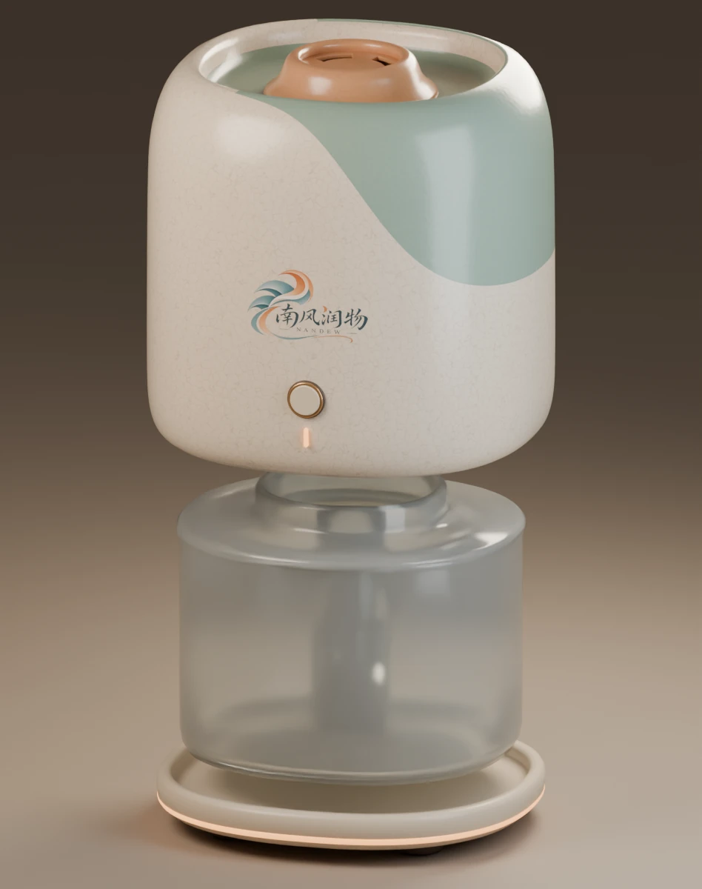

南风润物陶瓷加湿器
浅青釉面、暖白陶壳与陶橙色出雾口。外罩可提起，露出独立的透明水箱。






釉色与器型
一抹青釉，延伸到手边
浅青釉面从出雾口延伸到机身一侧，暖白色留给陶壳的大部分曲面。细开片和灯光在场景图里更容易看清。
查看完整产品设计图 同样的釉色，也在品牌 IP 身上查看青釉卷刺和陶橙额刺
同样的釉色，也在品牌 IP 身上查看青釉卷刺和陶橙额刺
浅青釉面、暖白陶壳与陶橙色出雾口。外罩可提起，露出独立的透明水箱。





釉色与器型
浅青釉面从出雾口延伸到机身一侧，暖白色留给陶壳的大部分曲面。细开片和灯光在场景图里更容易看清。
查看完整产品设计图
同样的釉色，也在品牌 IP 身上查看青釉卷刺和陶橙额刺